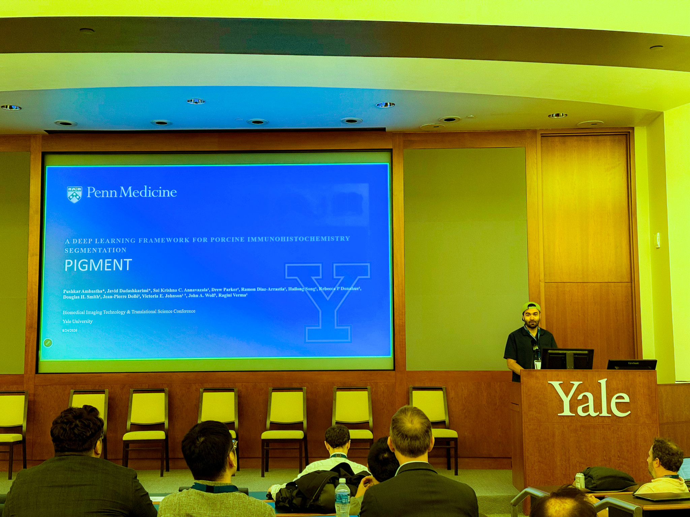
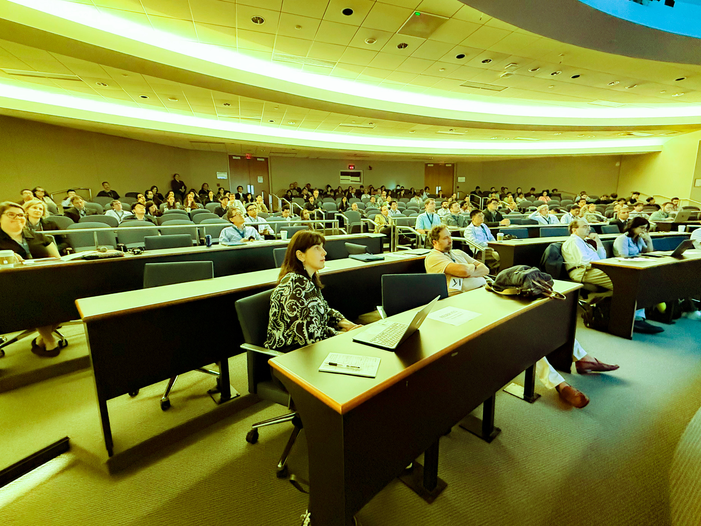

I'm grateful to be invited to share my research. Happy to speak on machine learning, connectomics, neuroimaging, or medical AI at future events. Reach out!
Biomedical Imaging Technology & Translational Science Conference · Yale University
Conference details (opens in a new tab)

